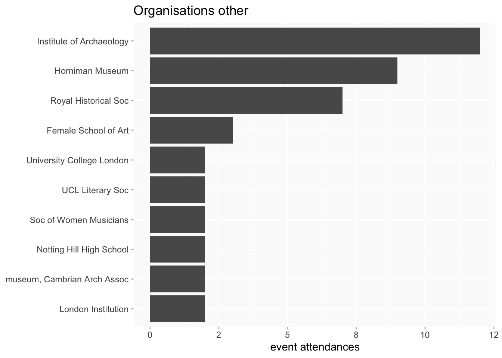
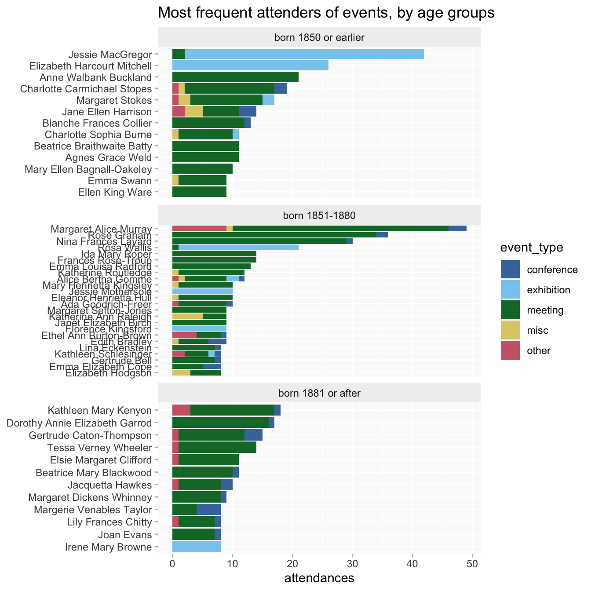
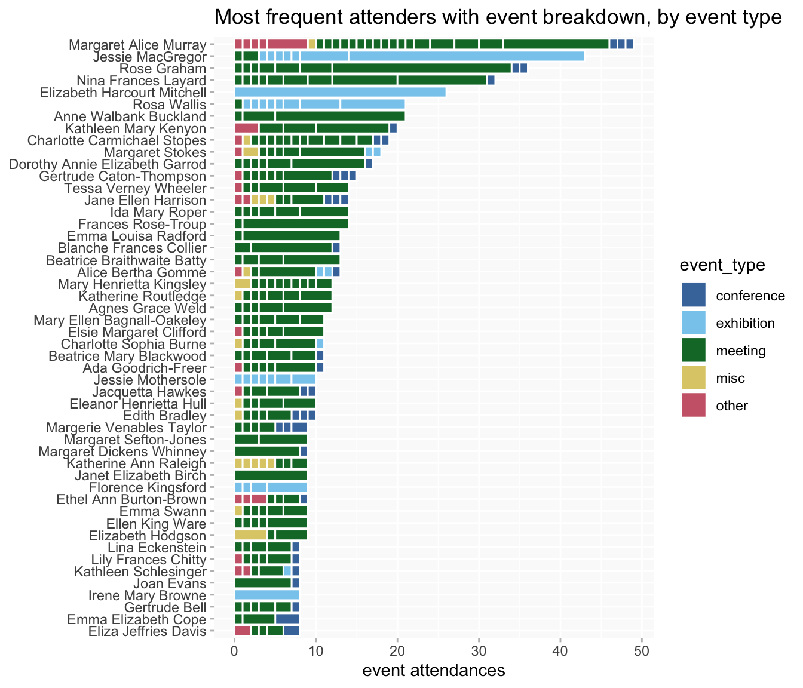
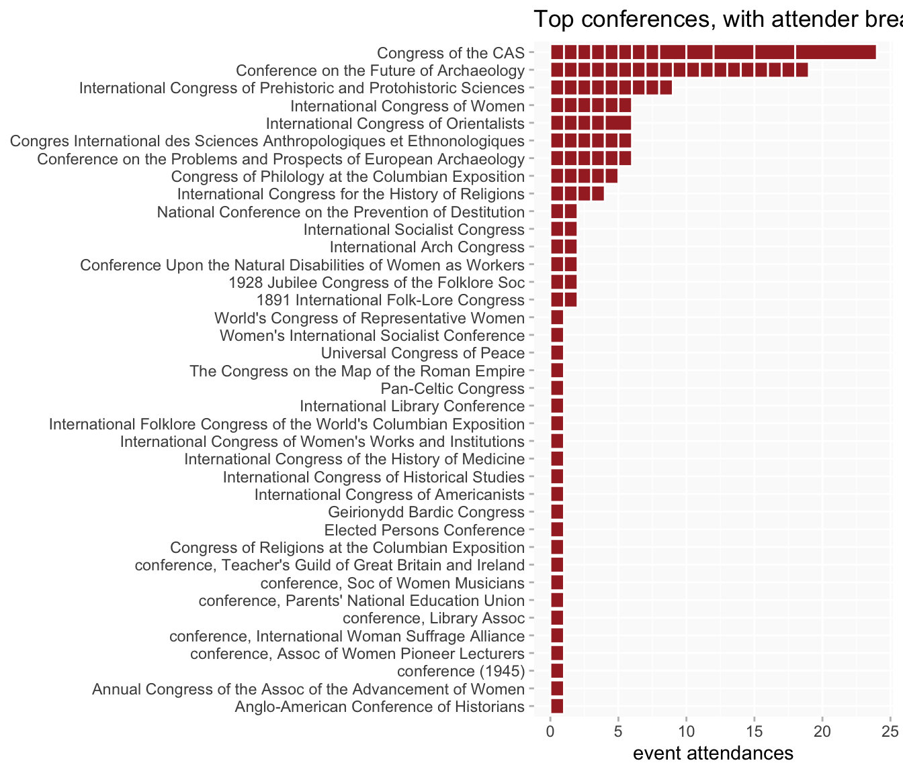
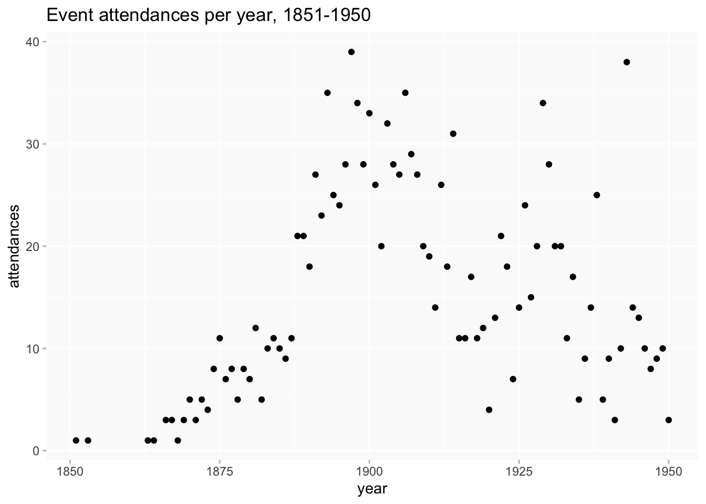
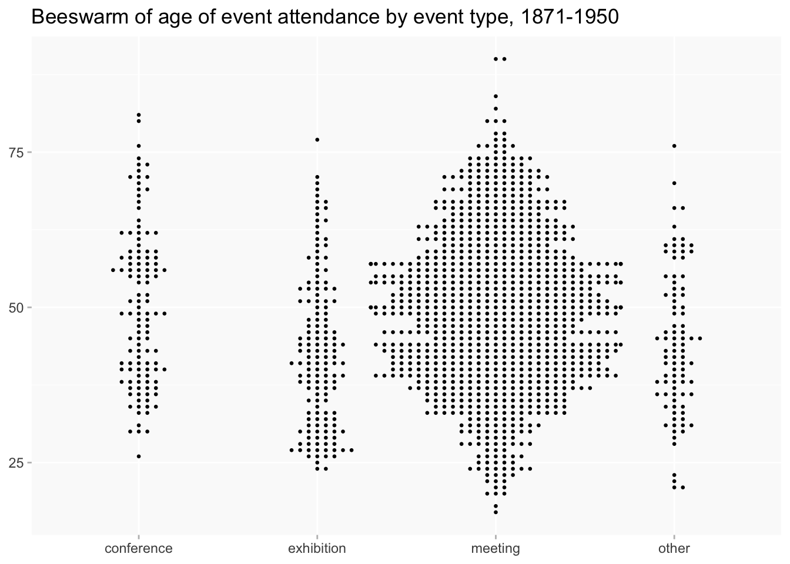
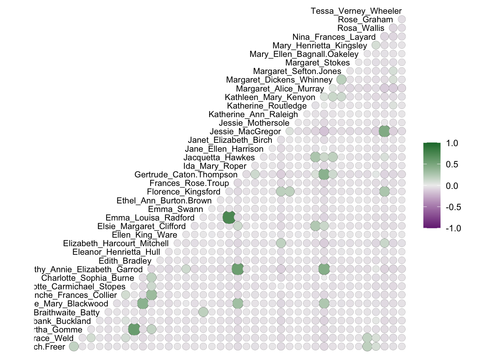
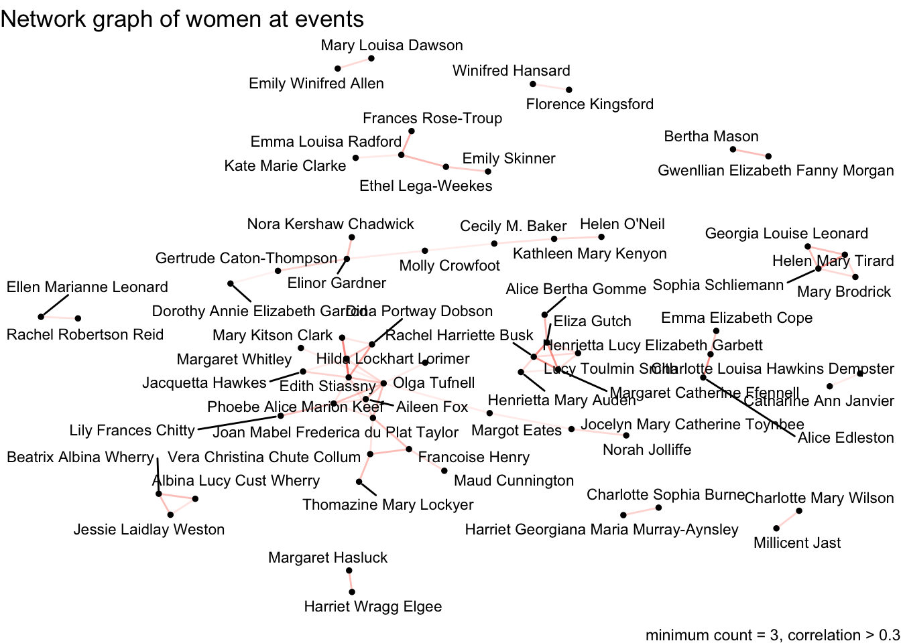

| ppa | ppa_id |
|---|---|
| was delegate at (item) | P71 |
| attended | P24 |
| was delegate at (free text) | P72 |
| spoke at | P23 |
| exhibited at | P13 |
| performed at | P120 |
| organiser of | P113 |
PPA events
ppa
Analysis of events participation
Wikibase queries
Notes
This analysis refers only to PPAs in the “event participation” bucket:
“was delegate at (item)” and “was delegate at (free text)” will be merged into a single PPA type “was delegate at” for purposes of analysis.
Definitions!
(a bit nerdy, sorry)
There are basically two different kinds of event in the data: recurring events (eg society monthly meetings or AGMs) and one-off events. Recurring events are a bit more complicated to handle when counting things.
So, for recurring events, “event” will refer to any/all instances of (eg) “meeting of the Folklore Society” (Q31 / Q292), “Royal Archaeological Institute Meeting” (Q29), and so on.
Meanwhile, an “event instance” refers to a single occurrence of a recurring event (eg the meeting of the Folklore Society that was held on 17 December 1903), or a one-off event. For counting one-off events “event” and “event instance” are the same thing.
Finally, an “event attendance” refers to one woman participating in one event instance. Sometimes the same event instance appears more than once on a woman’s page under different PPAs; unless the emphasis is on the specific activity rather than the event, I’ll reduce them to one for counting purposes.
Identifying what is a single instance of a recurring event is not always perfectly simple, especially given the different kinds of event present in the database. At present it’s based on three elements:
- the main event item, which may be generic such as “meeting” (Q31) or a named event like the “Conference on the Future of Archaeology” (Q1859)
- particularly for generic events, the
ofqualifier is used for more specific info (eg the name of the event/the organisation responsible). The less frequentorganised byqualifier is also used (but only where it doesn’t have instance of human). - the date
There are occasional variations in recording that might cause records of the same event instance to be counted separately. Eg there can be variations in date precision across different records of an event or an event might have been held over several days, so some assumptions have to be made about date grouping which could occasionally go wrong.
Conversely, in a very small number of cases, the absence of specific information might cause distinct events to be collapsed into a single instance.
In a few cases, there’s more than one possible way to structure a record of what could be the same event, and this will mean that they get treated as different things. Eg, there are specific items for SAL and RAI Meetings, but there are also occasional records in the form “meeting (Q31) of RAI/SAL” and it’s unclear to me whether it’s intentional (a different sort of meeting?) or just an oversight. (But I’d emphasise that this is very occasional and a minor issue.)
updates
- added more about event activities
- added regions heatmap; and a heatmap excluding London
- added tables of the counts in the heatmap
TODO
- I may be able to make a few further improvements by pulling in some infrequently used qualifiers
- Several events are related to suffrage activities (or other interesting subjects); nothing is being done with this kind of information at the moment. [post added on suffrage]
- Look into adding text annotations for data points of interest
Event types
- meeting: meeting Q31, Annual Meeting Q682 or a named event which has
instance ofQ31 or Q682 - exhibition: exhibition Q756, or a named event which has
instance ofQ756, or free text item mentions “Exhibition”. - conference: conference Q699 or a named event with
instance ofQ699, or free text item mentions “Conference”. - other: an event (eg a lecture) that’s associated with a named organisation but doesn’t seem to be part of one of the above. Some of these are meetings but not distinctly labelled as such.
- misc: mainly free text or generic events that don’t seem to fall into any of the categories above (a few improvements can be made to this as well but there are only about 20 of them)

Most frequently attended events
Counting by attendance (and ignoring different activities by the same woman)
Some labels are very long so they’re abbreviated (SAL, RAI, CAS; “Society”-> “Soc”, etc); occasionally this might result in something that looks a bit odd.
by event type
meetings (at least 6 attendances)
conferences (only those attended by more than 1 woman)

exhibitions (more than 1 attendance)

other (more than 1 attendance)

Frequent attenders
Many women turn up at only a small number of event instances. Who are the most frequent event attenders?
At least 8 attendances (ignoring different PPAs). About 140 women have only a single event attendance; about 40 went to 8 or more.
Jessie MacGregor is at the top because she exhibited at the RA Summer Exhibition almost every year from 1872 to 1904 (as well as six times at the Society of Lady Artists Exhibition).

By age groups
at least 8 attendances
- fewer women in the late group
- earlier women more likely to accumulate >20 attendances
- but in the 8-12 attendances range the numbers in each group are actually very similar

But overall counts can obscure interesting differences in patterns of participation. Some women, like Jessie MacGregor, might tend to attend just one or a few events; others might be spread more or less evenly across a wider range of events and/or organisations.
There are too many different events/organisations to show labelled breakdowns but it’s still possible to use a breakdown to get an overview of the patterns. It’s possible to see the extent to which Jessie’s participation is concentrated in just the one event, compared to, say, Margaret Murray’s profile (though Murray is also exceptional!).
It’s noticeable that in many cases, even women who attend several different events tend to favour one over the rest.
This colour codes the segments by event type; it’s kinda cute but I’m not sure if it’s useful
The chart can be flipped around, to look at patterns of participation by event rather than by person.
Conferences, as they’re all (or nearly all) one-off events aren’t very interesting except to show what a uniform one person per event pattern looks like.
Recurring events tend to share a similar and familiar sort of pattern (the flip side of women tending to prefer one event over others), that a relatively small number of people account for a high proportion of attendances, with a larger number of more irregular/occasional attenders. But the exact distribution varies; it may be more pronounced for smaller organisations’ events.

Because exhibitions are a mix of recurring and one-off events, they have a mixed pattern.
By organisation
(some of these for conferences/exhibitions are not really “organisations” as such)
at least 7 attendances
at least 4 women

Slight differences between charts for women vs women’s individual attendances again point to different patterns of participation.
The breakdown by attenders for organisations.
Time
In general, I assume the data is unlikely to be anywhere near comprehensive enough to say anything about trends, though I don’t know if that might be less true within specific more fully recorded organisations/events.
Nonetheless the shape of the data we have is interesting.
(The late peak is largely due to the year of the future of archaeology conference; the one in the middle is partly accounted for by the 1891 folklore objects exhibition.)

by event types

beeswarms
event types by date
Regions
caveats
- UK only
- some positions don’t have enough information recorded to look for a location
- some potentially mappable events in the UK fail to be mapped, because they didn’t have location information to link to on their pages.
- it’s possible in some cases to look for information on wikidata instead, but that tends not to add very much
locations come from one of three possible sources:
- look for a location P2 for the event on the person page if there is one
- if there isn’t, look for a location P2 on the event page (for named events)
- if neither of the above, look for a location P2 on the page of the organisation responsible for the event (mainly for repeating meetings etc)
The third choice in some cases might not be completely accurate, but only a minority of events have one of the first two. The organisation location should normally be accurate enough for aggregated analysis.

As tables
| regionLabel | n |
|---|---|
| East Midlands | 10 |
| East of England | 29 |
| London (region) | 637 |
| North East England | 14 |
| North West England | 60 |
| Northern Ireland | 2 |
| Scotland | 36 |
| South East England | 66 |
| South West England | 110 |
| Wales | 9 |
| West Midlands | 14 |
| Yorkshire and the Humber | 20 |
A breakdown of the London postcode areas.
(the row labelled just “London” may be events for which there isn’t a more detailed location or could be an issue with the data processing; I’ll look into those).
| p33_label | n |
|---|---|
| London | 26 |
| London E | 3 |
| London EC | 4 |
| London NW | 38 |
| London SE | 10 |
| London SW | 25 |
| London W | 426 |
| London WC | 105 |
Activities

Including this in part because the presence of performed at in both misc and other might suggest something I’m not quite capturing in those two groups that I need to look into.

beeswarms
(probably repeats charts I’ve already posted, but may as well have them in this post)


Connections
In network graphs or other visualisations of connections I’m often using correlation coefficients rather than simple counts of pairs, so this is a brief explanation of what that means.
Correlation isn’t simply how often people are found together, which tends to give prominence to the people who appear most often in the data - Margaret Murray would turn up a lot for example, but that’s partly because she’s everywhere. Correlation coefficients are a measure of how likely pairs are to appear together relative to all the other possible pairs in the data. So they may be helpful for surfacing relationships that might not be immediately obvious simply from numbers.
Hence it’s possible to have negative as well as positive scores. Greens in the correlation plot show pairs who appear together more often than expected, purples (probably blues to James) are people who are apart more often than expected (which might sometimes be interesting too).
Caveats
Correlations can be misleading in the opposite way from counts, if you have a lot of single appearances in the data (as we do). That can result in impressive looking scores of 1.0, but it just means that two women happen to be recorded just once, at the same event, which may be completely random and unrepresentative. So usually I’ll set a threshold of at least two/three appearances.
Most of the correlations in this kind of data aren’t very strong by statisticians’ standards: +/- 0.4 is usually the threshold for “moderate” strength, although I think for exploratory purposes anything from 0.25 upwards can be of interest. (For reference, the Jessie MacGregor-Rosa Wallis link scores only 0.21.)
A correlation plot of women with at least 9 attendances (it’s not really possible to squeeze more names in).

Network graphs
(darker lines represent stronger correlations)